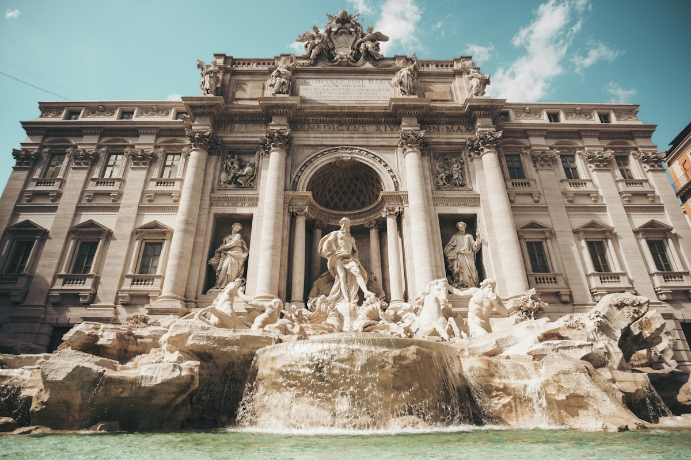
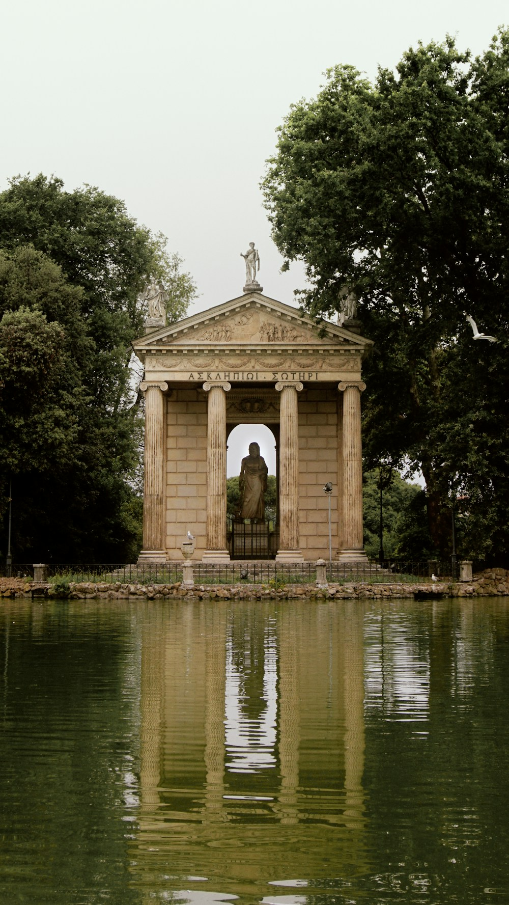
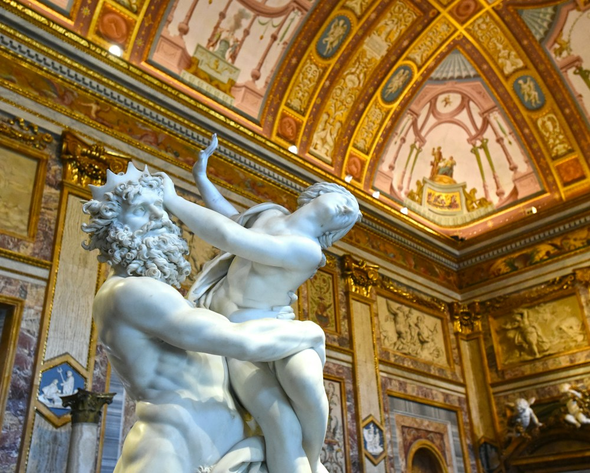
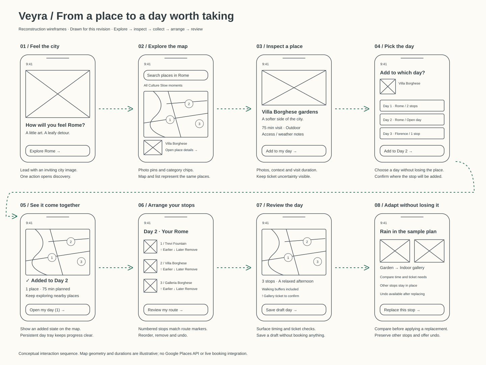
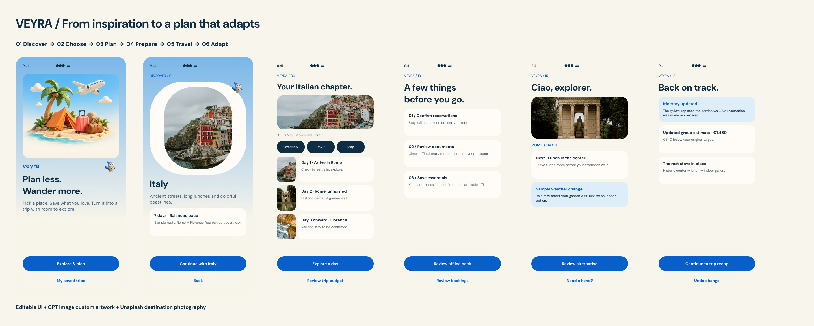

From saved places to a day that feels personal.
Veyra connects discovery, route planning, and flexible itineraries in one clear experience.
ExploreFind a place.
CollectAdd it to the day.
ArrangeMake the route work.
The experience / See it in motion
One place.
A day taking shape.
Follow a place from the map into your itinerary.
ROME A day of your ownTravel-planning walkthrough

1
2
301 / EXPLORE
A place catches your eye.
Villa Borghese gardensA softer side of Rome · 75 min
YOUR DAY / ROME
1 Trevi Fountain
2 Villa Borghese gardens Added
3 Galleria Borghese
Open a photo pin to see what makes a place worth your time.
A three-step walkthrough of the experience. Use the steps or play once.
The problem in three moments
Great places.
A day that doesn’t quite fit.
What fits together?
One change, many doubts.
Working hypotheses for traveler research.
02 / Understand
Less organizing.
More looking forward to it.
A CITY TO EXPERIENCE,
NOT A LIST TO COMPLETE.
NOT A LIST TO COMPLETE.
Working audience / The thoughtful organizer
“A good day together.
Not another project to manage.”
Core job statement.
- Wants
- Discovery with room to change direction.
- Needs
- Nearby places, realistic timing, clear ticket needs.
- Fears
- A packed schedule that becomes everyone’s problem.
THE FEEDBACK THAT CHANGED THE DESIGNToo many selections.
Too many selections.
Not enough sense of the city.
Project review prompted a shift from text-led setup to visual exploration.
03 / Define the opportunity
How might we turn
“I’d love to go there” into
“this day feels like us”?
Inspire before askingKeep context visibleMake change reversible
Experience mapping
One continuous journey.
Different kinds of care.
From the first saved place to a change of plan, keep the next step clear.
“That looks like us.”
Explore the city through places and photographs.
Curiosity
Design responseMap + photo cards“Let’s make time for it.”
Understand a place and add it to the right day.
Anticipation
Design responsePlace detail + day tray“Does this work?”
See the route, timing and unresolved decisions.
Uncertainty to clarity
Design responseRoute + editable stops“Are we ready?”
Separate a saved idea from a confirmed booking.
Reassurance
Design responseStatus + essentials“What can we change?”
Replace one stop without losing the rest.
Concern to control
Design responseCompare + undoHypothesized emotional journey, not a measured sentiment study. Swipe horizontally on smaller screens.
See the service considerations behind the journey
| Experience promise | Production dependency | Honest interface behavior |
|---|---|---|
| Know the place | Maintained place data and opening hours | Show unknown information instead of inventing certainty. |
| Make a realistic route | Routing, access information and traveler preferences | Distinguish estimates from live directions. |
| Know what is booked | Provider confirmation or verified reservation import | Adding to a day must not imply a booking. |
| Be ready offline | Saved content, download status and refresh handling | Show what is available and when it was last updated. |
| Recover safely | Provider-specific availability and change policies | Changing a plan must not silently cancel a reservation. |
The design decision
Let the city lead.
Answer first. Discover later.
DestinationthenDates & preferencesthenBudgetthenGenerated itinerary
See a place. Build a day.
EXPLORE · INSPECT · ADD“I want this
in my day.”
in my day.”
1 Explore·2 Collect·3 Arrange
Why a visual workspace?
A blank itinerary leaves the synthesis to the traveler. Chat can bury constraints in conversation. A visual workspace keeps places, route and timing in view together.
Design / Low-fidelity exploration
Work out the journey.
Then work on the detail.
Eight connected sketches. One question: is the next step clear?

Wireframes created during the design process.
Same place, same identity
One identity across the map, card and itinerary.
Progress stays in sight
A day tray shows what was added and where.
A safe way back
Preview a replacement. Undo a removal. Keep the rest.
05 / The experience direction
Three views.
One shared plan.
Screen direction developed from the journey strategy.
9:41 ●●● ▰
ROME / DISCOVER
Follow your
curiosity.
⌕ Places, neighborhoods, moments
Route map
Villa Borghese gardensA softer side of the city
See the city before choosing.
Photo pins invite exploration. A list offers another way in.
9:41 ●●● ▰
A MOMENT TO SLOW DOWN
Villa Borghese
gardens
Leafy paths, a little water, and room to wander.
75 min
Suggested visitOutdoor
Weather sensitive
Suggested visitOutdoor
Weather sensitive
Check local access and conditions before visiting.
Balance feeling with context.
See the feeling, the time needed and the practical details.
9:41 ●●● ▰
DAY 2 / ROME
A day that
feels like you.
1
Trevi Fountain40 min · Suggested visit
⋮ Walking buffer
2
Villa Borghese75 min · Suggested visit
⋮ Room for a break
3
Galleria BorgheseTicket to confirm
Reorder your stops. Leave room for the unexpected.
Watch the day come together.
Reorder stops. Watch the route change. Leave breathing room.
Beyond the ideal path
Good planning also
makes room for change.
Rain changes one stop. It shouldn’t unravel the whole day.
- Compare visit time and ticket needs.
- Keep the other stops in place.
- Confirm before changing the day.
- Offer undo after the change.
Visual identity
Optimism with
a sense of direction.
A folded wing. Confident blue. Warm cream. A little anticipation.
veyraA little plan. A world of possibility.
APP TYPEFACE / DM SANSAa
Clear hierarchy.
Friendly proportions.
Room to breathe.
Journey blue#075FCC · Actions
Deep ink#102E43 · Reading
Warm cream#F8F5EC · Canvas
Open sky#DEEDFA · Surfaces
Coral#ED8E78 · Accent
“Review your plan.”
Say “added” for a place. Reserve “confirmed” for a verified booking.
Experience / Try the decisions
Move through the journey.
Try changing your mind.
Try the initial trip journey or the revised visual planning study.

The experience focuses on planning interactions; live navigation, booking, and payment services are outside its scope.
06 / Test next
Can they build it?
Can they change it?
Three tasks for the next traveler study. Traveler-study tasks.
Build a day
Find three places. Add them to the intended day.
Read the route
Explain the order, travel time and ticket checks.
Change your mind
Replace one stop. Undo it without losing the rest.
Research plan, criteria & accessibility checks
Recruit 6–8 recent trip planners, including group organizers and travelers with access needs. Observe their current tools before testing the journey.
| Study task | Observe | Acceptance target |
|---|---|---|
| Find three places and add them to a day | Search behavior, lost context, correct day selection | At least 6 of 8 complete without facilitator rescue. |
| Explain the day’s route | Map/list correspondence and timing comprehension | At least 6 of 8 identify stop order and one travel buffer. |
| Replace a stop, then undo it | Awareness of changes and retained stops | At least 6 of 8 restore the original plan unaided. |
| Identify what is not booked | Distinction between saved, planned and confirmed | All participants identify an unresolved ticket requirement. |
Report qualitative counts, not population-wide success rates. Check keyboard navigation, a list alternative to the map, text scaling, empty states and clear booking status.
Reflection / What the iteration changed
A plan should make
the trip feel more possible.
The key shift: help travelers imagine the day before asking them to organize it.
Keep
Warmth, clear actions and recoverable changes.
Change
Places first. Practical decisions in context.
Validate next
Can travelers follow—and change—their growing plan?
Designed and prototyped; not yet user-validated. No measured launch impact.